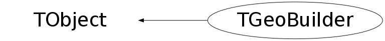

class TGeoBuilder: public TObject
TGeoBuilder Utility class for creating geometry objects.These will be associated with the current selected geometry manager object: TGeoBuilder::Instance()->SetGeometry(gGeoManager); The geometry builder is a singleton that may be used to build one or more geometries.
Function Members (Methods)
public:
| virtual | ~TGeoBuilder() |
| void | TObject::AbstractMethod(const char* method) const |
| Int_t | AddMaterial(TGeoMaterial* material) |
| Int_t | AddShape(TGeoShape* shape) |
| Int_t | AddTransformation(TGeoMatrix* matrix) |
| virtual void | TObject::AppendPad(Option_t* option = "") |
| virtual void | TObject::Browse(TBrowser* b) |
| static TClass* | Class() |
| virtual const char* | TObject::ClassName() const |
| virtual void | TObject::Clear(Option_t* = "") |
| virtual TObject* | TObject::Clone(const char* newname = "") const |
| virtual Int_t | TObject::Compare(const TObject* obj) const |
| virtual void | TObject::Copy(TObject& object) const |
| virtual void | TObject::Delete(Option_t* option = "")MENU |
| virtual Int_t | TObject::DistancetoPrimitive(Int_t px, Int_t py) |
| TGeoVolume* | Division(const char* name, const char* mother, Int_t iaxis, Int_t ndiv, Double_t start, Double_t step, Int_t numed = 0, Option_t* option = "") |
| virtual void | TObject::Draw(Option_t* option = "") |
| virtual void | TObject::DrawClass() constMENU |
| virtual TObject* | TObject::DrawClone(Option_t* option = "") constMENU |
| virtual void | TObject::Dump() constMENU |
| virtual void | TObject::Error(const char* method, const char* msgfmt) const |
| virtual void | TObject::Execute(const char* method, const char* params, Int_t* error = 0) |
| virtual void | TObject::Execute(TMethod* method, TObjArray* params, Int_t* error = 0) |
| virtual void | TObject::ExecuteEvent(Int_t event, Int_t px, Int_t py) |
| virtual void | TObject::Fatal(const char* method, const char* msgfmt) const |
| virtual TObject* | TObject::FindObject(const char* name) const |
| virtual TObject* | TObject::FindObject(const TObject* obj) const |
| virtual Option_t* | TObject::GetDrawOption() const |
| static Long_t | TObject::GetDtorOnly() |
| virtual const char* | TObject::GetIconName() const |
| virtual const char* | TObject::GetName() const |
| virtual char* | TObject::GetObjectInfo(Int_t px, Int_t py) const |
| static Bool_t | TObject::GetObjectStat() |
| virtual Option_t* | TObject::GetOption() const |
| virtual const char* | TObject::GetTitle() const |
| virtual UInt_t | TObject::GetUniqueID() const |
| virtual Bool_t | TObject::HandleTimer(TTimer* timer) |
| virtual ULong_t | TObject::Hash() const |
| virtual void | TObject::Info(const char* method, const char* msgfmt) const |
| virtual Bool_t | TObject::InheritsFrom(const char* classname) const |
| virtual Bool_t | TObject::InheritsFrom(const TClass* cl) const |
| virtual void | TObject::Inspect() constMENU |
| static TGeoBuilder* | Instance(TGeoManager* geom) |
| void | TObject::InvertBit(UInt_t f) |
| virtual TClass* | IsA() const |
| virtual Bool_t | TObject::IsEqual(const TObject* obj) const |
| virtual Bool_t | TObject::IsFolder() const |
| Bool_t | TObject::IsOnHeap() const |
| virtual Bool_t | TObject::IsSortable() const |
| Bool_t | TObject::IsZombie() const |
| virtual void | TObject::ls(Option_t* option = "") const |
| TGeoVolume* | MakeArb8(const char* name, TGeoMedium* medium, Double_t dz, Double_t* vertices = 0) |
| TGeoVolume* | MakeBox(const char* name, TGeoMedium* medium, Double_t dx, Double_t dy, Double_t dz) |
| TGeoVolume* | MakeCone(const char* name, TGeoMedium* medium, Double_t dz, Double_t rmin1, Double_t rmax1, Double_t rmin2, Double_t rmax2) |
| TGeoVolume* | MakeCons(const char* name, TGeoMedium* medium, Double_t dz, Double_t rmin1, Double_t rmax1, Double_t rmin2, Double_t rmax2, Double_t phi1, Double_t phi2) |
| TGeoVolume* | MakeCtub(const char* name, TGeoMedium* medium, Double_t rmin, Double_t rmax, Double_t dz, Double_t phi1, Double_t phi2, Double_t lx, Double_t ly, Double_t lz, Double_t tx, Double_t ty, Double_t tz) |
| TGeoVolume* | MakeEltu(const char* name, TGeoMedium* medium, Double_t a, Double_t b, Double_t dz) |
| TGeoVolume* | MakeGtra(const char* name, TGeoMedium* medium, Double_t dz, Double_t theta, Double_t phi, Double_t twist, Double_t h1, Double_t bl1, Double_t tl1, Double_t alpha1, Double_t h2, Double_t bl2, Double_t tl2, Double_t alpha2) |
| TGeoVolume* | MakeHype(const char* name, TGeoMedium* medium, Double_t rin, Double_t stin, Double_t rout, Double_t stout, Double_t dz) |
| TGeoVolume* | MakePara(const char* name, TGeoMedium* medium, Double_t dx, Double_t dy, Double_t dz, Double_t alpha, Double_t theta, Double_t phi) |
| TGeoVolume* | MakeParaboloid(const char* name, TGeoMedium* medium, Double_t rlo, Double_t rhi, Double_t dz) |
| TGeoVolume* | MakePcon(const char* name, TGeoMedium* medium, Double_t phi, Double_t dphi, Int_t nz) |
| TGeoVolume* | MakePgon(const char* name, TGeoMedium* medium, Double_t phi, Double_t dphi, Int_t nedges, Int_t nz) |
| TGeoVolume* | MakeSphere(const char* name, TGeoMedium* medium, Double_t rmin, Double_t rmax, Double_t themin = 0, Double_t themax = 180, Double_t phimin = 0, Double_t phimax = 360) |
| TGeoVolume* | MakeTorus(const char* name, TGeoMedium* medium, Double_t r, Double_t rmin, Double_t rmax, Double_t phi1 = 0, Double_t dphi = 360) |
| TGeoVolume* | MakeTrap(const char* name, TGeoMedium* medium, Double_t dz, Double_t theta, Double_t phi, Double_t h1, Double_t bl1, Double_t tl1, Double_t alpha1, Double_t h2, Double_t bl2, Double_t tl2, Double_t alpha2) |
| TGeoVolume* | MakeTrd1(const char* name, TGeoMedium* medium, Double_t dx1, Double_t dx2, Double_t dy, Double_t dz) |
| TGeoVolume* | MakeTrd2(const char* name, TGeoMedium* medium, Double_t dx1, Double_t dx2, Double_t dy1, Double_t dy2, Double_t dz) |
| TGeoVolume* | MakeTube(const char* name, TGeoMedium* medium, Double_t rmin, Double_t rmax, Double_t dz) |
| TGeoVolume* | MakeTubs(const char* name, TGeoMedium* medium, Double_t rmin, Double_t rmax, Double_t dz, Double_t phi1, Double_t phi2) |
| TGeoVolumeAssembly* | MakeVolumeAssembly(const char* name) |
| TGeoVolumeMulti* | MakeVolumeMulti(const char* name, TGeoMedium* medium) |
| TGeoVolume* | MakeXtru(const char* name, TGeoMedium* medium, Int_t nz) |
| TGeoMaterial* | Material(const char* name, Double_t a, Double_t z, Double_t dens, Int_t uid, Double_t radlen = 0, Double_t intlen = 0) |
| void | Matrix(Int_t index, Double_t theta1, Double_t phi1, Double_t theta2, Double_t phi2, Double_t theta3, Double_t phi3) |
| void | TObject::MayNotUse(const char* method) const |
| TGeoMedium* | Medium(const char* name, Int_t numed, Int_t nmat, Int_t isvol, Int_t ifield, Double_t fieldm, Double_t tmaxfd, Double_t stemax, Double_t deemax, Double_t epsil, Double_t stmin) |
| TGeoMaterial* | Mixture(const char* name, Float_t* a, Float_t* z, Double_t dens, Int_t nelem, Float_t* wmat, Int_t uid) |
| TGeoMaterial* | Mixture(const char* name, Double_t* a, Double_t* z, Double_t dens, Int_t nelem, Double_t* wmat, Int_t uid) |
| void | Node(const char* name, Int_t nr, const char* mother, Double_t x, Double_t y, Double_t z, Int_t irot, Bool_t isOnly, Float_t* upar, Int_t npar = 0) |
| void | Node(const char* name, Int_t nr, const char* mother, Double_t x, Double_t y, Double_t z, Int_t irot, Bool_t isOnly, Double_t* upar, Int_t npar = 0) |
| virtual Bool_t | TObject::Notify() |
| void | TObject::Obsolete(const char* method, const char* asOfVers, const char* removedFromVers) const |
| static void | TObject::operator delete(void* ptr) |
| static void | TObject::operator delete(void* ptr, void* vp) |
| static void | TObject::operator delete[](void* ptr) |
| static void | TObject::operator delete[](void* ptr, void* vp) |
| void* | TObject::operator new(size_t sz) |
| void* | TObject::operator new(size_t sz, void* vp) |
| void* | TObject::operator new[](size_t sz) |
| void* | TObject::operator new[](size_t sz, void* vp) |
| virtual void | TObject::Paint(Option_t* option = "") |
| virtual void | TObject::Pop() |
| virtual void | TObject::Print(Option_t* option = "") const |
| virtual Int_t | TObject::Read(const char* name) |
| virtual void | TObject::RecursiveRemove(TObject* obj) |
| void | RegisterMatrix(TGeoMatrix* matrix) |
| void | TObject::ResetBit(UInt_t f) |
| virtual void | TObject::SaveAs(const char* filename = "", Option_t* option = "") constMENU |
| virtual void | TObject::SavePrimitive(ostream& out, Option_t* option = "") |
| void | TObject::SetBit(UInt_t f) |
| void | TObject::SetBit(UInt_t f, Bool_t set) |
| virtual void | TObject::SetDrawOption(Option_t* option = "")MENU |
| static void | TObject::SetDtorOnly(void* obj) |
| static void | TObject::SetObjectStat(Bool_t stat) |
| virtual void | TObject::SetUniqueID(UInt_t uid) |
| virtual void | ShowMembers(TMemberInspector& insp) |
| virtual void | Streamer(TBuffer& b) |
| void | StreamerNVirtual(TBuffer& b) |
| virtual void | TObject::SysError(const char* method, const char* msgfmt) const |
| Bool_t | TObject::TestBit(UInt_t f) const |
| Int_t | TObject::TestBits(UInt_t f) const |
| virtual void | TObject::UseCurrentStyle() |
| TGeoVolume* | Volume(const char* name, const char* shape, Int_t nmed, Float_t* upar, Int_t npar = 0) |
| TGeoVolume* | Volume(const char* name, const char* shape, Int_t nmed, Double_t* upar, Int_t npar = 0) |
| virtual void | TObject::Warning(const char* method, const char* msgfmt) const |
| virtual Int_t | TObject::Write(const char* name = 0, Int_t option = 0, Int_t bufsize = 0) |
| virtual Int_t | TObject::Write(const char* name = 0, Int_t option = 0, Int_t bufsize = 0) const |
protected:
| TGeoBuilder() | |
| TGeoBuilder(const TGeoBuilder&) | |
| virtual void | TObject::DoError(int level, const char* location, const char* fmt, va_list va) const |
| void | TObject::MakeZombie() |
| TGeoBuilder& | operator=(const TGeoBuilder&) |
private:
| void | SetGeometry(TGeoManager* geom) |
Data Members
public:
| enum TObject::EStatusBits { | kCanDelete | |
| kMustCleanup | ||
| kObjInCanvas | ||
| kIsReferenced | ||
| kHasUUID | ||
| kCannotPick | ||
| kNoContextMenu | ||
| kInvalidObject | ||
| }; | ||
| enum TObject::[unnamed] { | kIsOnHeap | |
| kNotDeleted | ||
| kZombie | ||
| kBitMask | ||
| kSingleKey | ||
| kOverwrite | ||
| kWriteDelete | ||
| }; |
protected:
| static TGeoBuilder* | fgInstance | ! static pointer to singleton |
private:
| TGeoManager* | fGeometry | ! current geometry |
Class Charts
{kind=link}
{kind=link}
{kind=link}
{kind=link}

Function documentation
Int_t AddMaterial(TGeoMaterial* material)
Add a material to the list. Returns index of the material in list.
Int_t AddTransformation(TGeoMatrix* matrix)
Add a matrix to the list. Returns index of the matrix in list.
void RegisterMatrix(TGeoMatrix* matrix)
Register a matrix to the list of matrices. It will be cleaned-up at the destruction TGeoManager.
TGeoVolume * MakeArb8(const char* name, TGeoMedium* medium, Double_t dz, Double_t* vertices = 0)
Make an TGeoArb8 volume.
TGeoVolume * MakeBox(const char* name, TGeoMedium* medium, Double_t dx, Double_t dy, Double_t dz)
Make in one step a volume pointing to a box shape with given medium.
TGeoVolume * MakePara(const char* name, TGeoMedium* medium, Double_t dx, Double_t dy, Double_t dz, Double_t alpha, Double_t theta, Double_t phi)
Make in one step a volume pointing to a paralelipiped shape with given medium.
TGeoVolume * MakeSphere(const char* name, TGeoMedium* medium, Double_t rmin, Double_t rmax, Double_t themin = 0, Double_t themax = 180, Double_t phimin = 0, Double_t phimax = 360)
Make in one step a volume pointing to a sphere shape with given medium
TGeoVolume * MakeTorus(const char* name, TGeoMedium* medium, Double_t r, Double_t rmin, Double_t rmax, Double_t phi1 = 0, Double_t dphi = 360)
Make in one step a volume pointing to a torus shape with given medium.
TGeoVolume * MakeTube(const char* name, TGeoMedium* medium, Double_t rmin, Double_t rmax, Double_t dz)
Make in one step a volume pointing to a tube shape with given medium.
TGeoVolume * MakeTubs(const char* name, TGeoMedium* medium, Double_t rmin, Double_t rmax, Double_t dz, Double_t phi1, Double_t phi2)
Make in one step a volume pointing to a tube segment shape with given medium.
TGeoVolume * MakeEltu(const char* name, TGeoMedium* medium, Double_t a, Double_t b, Double_t dz)
Make in one step a volume pointing to a tube shape with given medium
TGeoVolume * MakeHype(const char* name, TGeoMedium* medium, Double_t rin, Double_t stin, Double_t rout, Double_t stout, Double_t dz)
Make in one step a volume pointing to a tube shape with given medium
TGeoVolume * MakeParaboloid(const char* name, TGeoMedium* medium, Double_t rlo, Double_t rhi, Double_t dz)
Make in one step a volume pointing to a tube shape with given medium
TGeoVolume * MakeCtub(const char* name, TGeoMedium* medium, Double_t rmin, Double_t rmax, Double_t dz, Double_t phi1, Double_t phi2, Double_t lx, Double_t ly, Double_t lz, Double_t tx, Double_t ty, Double_t tz)
Make in one step a volume pointing to a tube segment shape with given medium
TGeoVolume * MakeCone(const char* name, TGeoMedium* medium, Double_t dz, Double_t rmin1, Double_t rmax1, Double_t rmin2, Double_t rmax2)
Make in one step a volume pointing to a cone shape with given medium.
TGeoVolume * MakeCons(const char* name, TGeoMedium* medium, Double_t dz, Double_t rmin1, Double_t rmax1, Double_t rmin2, Double_t rmax2, Double_t phi1, Double_t phi2)
Make in one step a volume pointing to a cone segment shape with given medium
TGeoVolume * MakePcon(const char* name, TGeoMedium* medium, Double_t phi, Double_t dphi, Int_t nz)
Make in one step a volume pointing to a polycone shape with given medium.
TGeoVolume * MakePgon(const char* name, TGeoMedium* medium, Double_t phi, Double_t dphi, Int_t nedges, Int_t nz)
Make in one step a volume pointing to a polygone shape with given medium.
TGeoVolume * MakeTrd1(const char* name, TGeoMedium* medium, Double_t dx1, Double_t dx2, Double_t dy, Double_t dz)
Make in one step a volume pointing to a TGeoTrd1 shape with given medium.
TGeoVolume * MakeTrd2(const char* name, TGeoMedium* medium, Double_t dx1, Double_t dx2, Double_t dy1, Double_t dy2, Double_t dz)
Make in one step a volume pointing to a TGeoTrd2 shape with given medium.
TGeoVolume * MakeTrap(const char* name, TGeoMedium* medium, Double_t dz, Double_t theta, Double_t phi, Double_t h1, Double_t bl1, Double_t tl1, Double_t alpha1, Double_t h2, Double_t bl2, Double_t tl2, Double_t alpha2)
Make in one step a volume pointing to a trapezoid shape with given medium.
TGeoVolume * MakeGtra(const char* name, TGeoMedium* medium, Double_t dz, Double_t theta, Double_t phi, Double_t twist, Double_t h1, Double_t bl1, Double_t tl1, Double_t alpha1, Double_t h2, Double_t bl2, Double_t tl2, Double_t alpha2)
Make in one step a volume pointing to a twisted trapezoid shape with given medium.
TGeoVolume * MakeXtru(const char* name, TGeoMedium* medium, Int_t nz)
Make a TGeoXtru-shaped volume with nz planes
TGeoVolumeMulti * MakeVolumeMulti(const char* name, TGeoMedium* medium)
Make a TGeoVolumeMulti handling a list of volumes.
TGeoVolume * Division(const char* name, const char* mother, Int_t iaxis, Int_t ndiv, Double_t start, Double_t step, Int_t numed = 0, Option_t* option = "")
Create a new volume by dividing an existing one (GEANT3 like)
Divides MOTHER into NDIV divisions called NAME
along axis IAXIS starting at coordinate value START
and having size STEP. The created volumes will have tracking
media ID=NUMED (if NUMED=0 -> same media as MOTHER)
The behavior of the division operation can be triggered using OPTION :
OPTION (case insensitive) :
N - divide all range in NDIV cells (same effect as STEP<=0) (GSDVN in G3)
NX - divide range starting with START in NDIV cells (GSDVN2 in G3)
S - divide all range with given STEP. NDIV is computed and divisions will be centered
in full range (same effect as NDIV<=0) (GSDVS, GSDVT in G3)
SX - same as DVS, but from START position. (GSDVS2, GSDVT2 in G3)
void Matrix(Int_t index, Double_t theta1, Double_t phi1, Double_t theta2, Double_t phi2, Double_t theta3, Double_t phi3)
Create rotation matrix named 'mat<index>'. index rotation matrix number theta1 polar angle for axis X phi1 azimuthal angle for axis X theta2 polar angle for axis Y phi2 azimuthal angle for axis Y theta3 polar angle for axis Z phi3 azimuthal angle for axis Z
TGeoMaterial * Material(const char* name, Double_t a, Double_t z, Double_t dens, Int_t uid, Double_t radlen = 0, Double_t intlen = 0)
Create material with given A, Z and density, having an unique id.
TGeoMaterial * Mixture(const char* name, Float_t* a, Float_t* z, Double_t dens, Int_t nelem, Float_t* wmat, Int_t uid)
Create mixture OR COMPOUND IMAT as composed by THE BASIC nelem materials defined by arrays A,Z and WMAT, having an unique id.
TGeoMaterial * Mixture(const char* name, Double_t* a, Double_t* z, Double_t dens, Int_t nelem, Double_t* wmat, Int_t uid)
Create mixture OR COMPOUND IMAT as composed by THE BASIC nelem materials defined by arrays A,Z and WMAT, having an unique id.
TGeoMedium * Medium(const char* name, Int_t numed, Int_t nmat, Int_t isvol, Int_t ifield, Double_t fieldm, Double_t tmaxfd, Double_t stemax, Double_t deemax, Double_t epsil, Double_t stmin)
Create tracking medium numed tracking medium number assigned name tracking medium name nmat material number isvol sensitive volume flag ifield magnetic field fieldm max. field value (kilogauss) tmaxfd max. angle due to field (deg/step) stemax max. step allowed deemax max. fraction of energy lost in a step epsil tracking precision (cm) stmin min. step due to continuous processes (cm) ifield = 0 if no magnetic field; ifield = -1 if user decision in guswim; ifield = 1 if tracking performed with g3rkuta; ifield = 2 if tracking performed with g3helix; ifield = 3 if tracking performed with g3helx3.
void Node(const char* name, Int_t nr, const char* mother, Double_t x, Double_t y, Double_t z, Int_t irot, Bool_t isOnly, Float_t* upar, Int_t npar = 0)
Create a node called <name_nr> pointing to the volume called <name> as daughter of the volume called <mother> (gspos). The relative matrix is made of : a translation (x,y,z) and a rotation matrix named <matIROT>. In case npar>0, create the volume to be positioned in mother, according its actual parameters (gsposp). NAME Volume name NUMBER Copy number of the volume MOTHER Mother volume name X X coord. of the volume in mother ref. sys. Y Y coord. of the volume in mother ref. sys. Z Z coord. of the volume in mother ref. sys. IROT Rotation matrix number w.r.t. mother ref. sys. ISONLY ONLY/MANY flag
void Node(const char* name, Int_t nr, const char* mother, Double_t x, Double_t y, Double_t z, Int_t irot, Bool_t isOnly, Double_t* upar, Int_t npar = 0)
Create a node called <name_nr> pointing to the volume called <name> as daughter of the volume called <mother> (gspos). The relative matrix is made of : a translation (x,y,z) and a rotation matrix named <matIROT>. In case npar>0, create the volume to be positioned in mother, according its actual parameters (gsposp). NAME Volume name NUMBER Copy number of the volume MOTHER Mother volume name X X coord. of the volume in mother ref. sys. Y Y coord. of the volume in mother ref. sys. Z Z coord. of the volume in mother ref. sys. IROT Rotation matrix number w.r.t. mother ref. sys. ISONLY ONLY/MANY flag
TGeoVolume * Volume(const char* name, const char* shape, Int_t nmed, Float_t* upar, Int_t npar = 0)
TGeoVolume * Volume(const char* name, const char* shape, Int_t nmed, Double_t* upar, Int_t npar = 0)